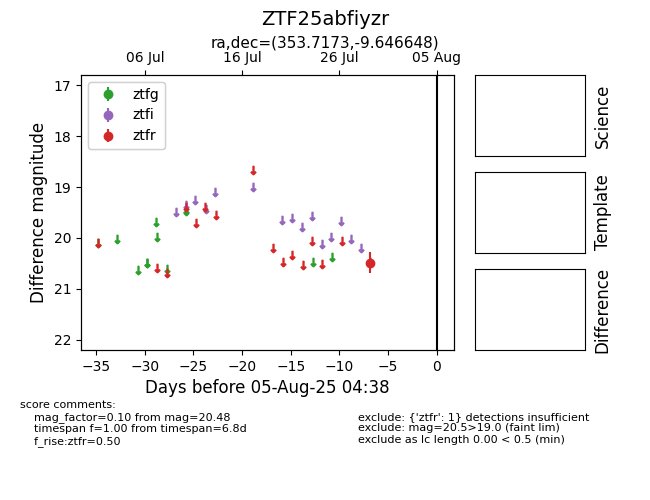

Target ZTF25abfiyzr at 2025-08-05 04:38, see:
FINK: fink-portal.org/ZTF25abfiyzr
Lasair: lasair-ztf.lsst.ac.uk/objects/ZTF25abfiyzr
ALeRCE: alerce.online/object/ZTF25abfiyzr
alt names
ZTF25abfiyzr (ztf,fink)
coordinates:
equatorial (ra, dec) = (353.7173,-9.64665)
galactic (l, b) = (73.3745,-64.86372)
photometry
last ztfr=20.48
1 ztfr detections
